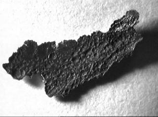
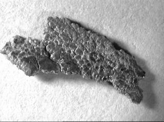

Our laboratory has received a small piece of material that we are keen to
try and identify. Although we can characterise is structure (described
briefly below) we are unsure of its origin and possible function. Therefore,
I would like to hear from anyone who could shed some light on this mystery
material and who does not think this is from an anti-gravity machine! My
email address and telephone number are provided below.
 
Views of the two sides of the material, longest dimension shown is 1.5cm.
Material Description:
solid sheet (thickness ~1mm) with rough surfaces, one light and the other
dark. The structural integrity is very weak parallel to each surface.
Microscopic examination reveals that this is because the sheet is composed
of alternalte layers of very different composition. These alternating
discrete layers consist of (a) magnesium (~200-400 microns) possessing some
preferred orientation and (b) a relatively thin layer (~4 microns)
containing a high concentration of bismuth (40 wt%) and lead, the rest being
Mg.
There may be some evidence of further layering within each of the thicker Mg
layers. Other features are the presence of zinc (concentration dropping
through the material) and a trace of a bismuth-manganese alloy
(Bi2Mg3).
Any information would be
gratefully received.
Keith Rogers
Tel (01793)785399
email: rogersk@rmcs.cranfield.ac.uk
 Click here to return to BCA homepage
Click here to return to BCA homepage